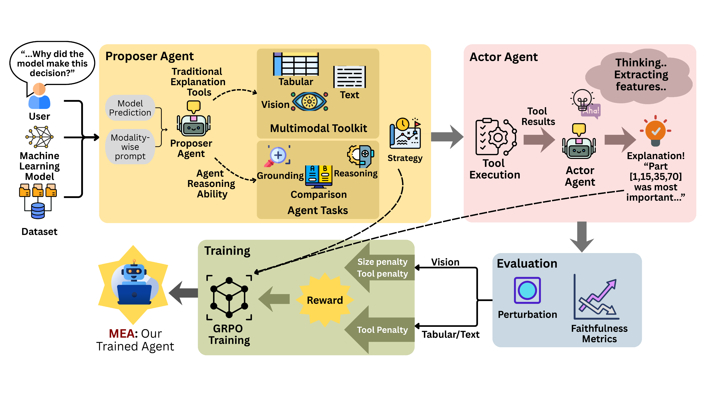
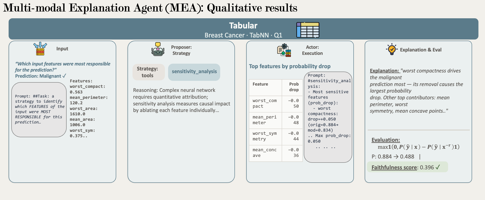
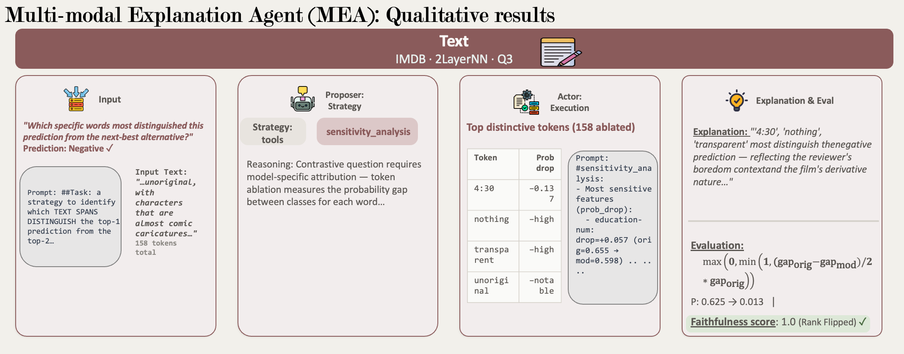
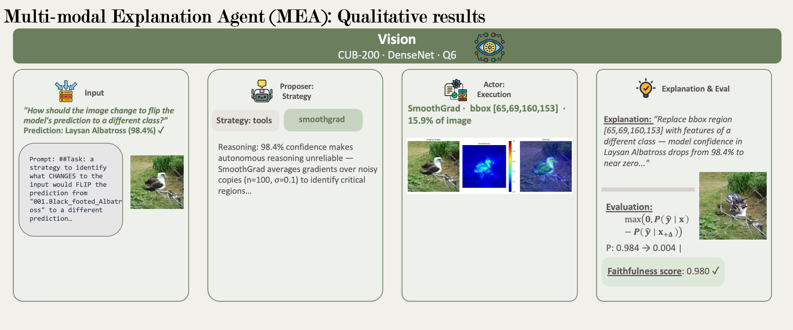

[Institution]
Recent years have seen the employment of a plethora of machine learning models in high-stakes domains, but they remain largely opaque to practitioners who act on their predictions. While post-hoc explanation methods offer a lens into model behavior, wielding them effectively demands expertise most domain experts lack. We present MEA (Multimodal Explainability Agent), a multi-agent framework that removes the explanation knowledge barrier entirely. A Proposer agent selects and configures explanation tools based on the question and modality, while an Actor agent is optimized end-to-end against faithfulness, transforming outputs into natural-language explanations grounded in model behavior across tabular, text, and vision modalities. By optimizing against faithfulness rewards augmented with a modality-adaptive penalty, MEA consistently outperforms post-hoc explainers, agentic, and closed-source baselines across six datasets, with reward-driven optimization yielding average faithfulness gains of 40%.

Overview of MEA. The Proposer selects an explanation strategy from a multimodal toolkit; the Actor executes it and produces a structured explanation. Both agents are jointly trained via GRPO with perturbation-based faithfulness rewards.
Both agents are fine-tuned jointly on Qwen3.6-35B-A3B via GRPO using faithfulness scores as sparse rewards. A modality-adaptive penalty prevents reward hacking: bounding-box size penalty for vision (λsize = 0.3) and an L1 tool-count penalty across all modalities (λtool = 0.05). The same advantage signal flows to both agents, so a misaligned strategy cannot be silently compensated.
Vision
Tabular
Ten question types across three categories, each paired with a perturbation-based faithfulness metric. Q8–Q10 are withheld from training as OOD probes.
Which input region most drives the model's prediction?
Which region has the least influence on the prediction?
What region creates the decision margin between top-1 and top-2 classes?
Why do two instances with different predictions receive different attributions?
If a region is masked, will the model's confidence increase or decrease?
What modification to the input would flip the model's prediction?
After removing the key region, which class would the model predict instead?
Which region causes a misclassified instance to be predicted incorrectly?
What shared spurious feature drives misclassification across multiple instances?
Why do two misclassified instances rely on different spurious features?
The first model- and modality-agnostic benchmark for agentic XAI. Each instance pairs an input sample with an automatically generated analytical prompt for one of the 10 question types, evaluated against perturbation-based faithfulness metrics.
RQ1MEA improves faithfulness across all modalities
MEA achieves the highest faithfulness scores across all three modalities and all ten question types. Tabular counterfactual: 0.873 vs. 0.670 (+30%). Vision counterfactual: 0.598 vs. 0.328 (+82%). Spurious feature detection: near-perfect (0.997 / 1.000 / 1.000).
Figure 1. Faithfulness scores of MEA vs. baselines across tabular (A), text (B), and vision (C). MEA outperforms GPT, Gemini, CoT, ToT, and ReAct.
RQ2MEA outperforms dedicated post-hoc explainers
Despite being a general-purpose agent, MEA beats specialized single-purpose explainers on feature attribution (Q1): +30% tabular, +12% text, matches the best method on vision (0.499 vs. 0.497).
Figure 2. Feature attribution (Q1) faithfulness across tabular (A), text (B), and vision (C).
RQ3RL training outperforms inference-time critique
Reflexion-style Critic at inference time cannot close the gap. Text counterfactual: Agent+Reflection 0.644 vs. MEA 0.876 (+36%). Tabular spurious: Critic degrades performance (0.514 vs. baseline 0.677); MEA reaches 0.997. Paraphrase variants score within <1% of original.
Figure 3. Base agent vs. base + Critic (Reflexion) vs. MEA across tabular (A), text (B), and vision (C).
RQ4MEA generalizes to OOD datasets and architectures
Evaluated on unseen datasets and model architectures held out entirely from training. MEA consistently improves over the base agent: tabular +53%, vision +29%, text +10% overall faithfulness gain.
Figure 4. OOD faithfulness per question group — Feature Attribution, Counterfactual Reasoning, Spurious Feature Detection — across three modalities.
End-to-end pipeline executions across representative samples from each modality.

Tabular. End-to-end MEA execution on a tabular input.

Text. End-to-end MEA execution on a text input.

Figure 5. End-to-end MEA executions across Tabular, Text, and Vision modalities: input, Proposer's strategy, Actor's output, and faithfulness evaluation.
@inproceedings{mea2025,
title = {{MEA}: A Reward-Driven Multi-Agent System for
Faithful Model Explanations},
author = {[Authors]},
booktitle = {Proceedings of the 63rd Annual Meeting of the
Association for Computational Linguistics (ACL)},
year = {2025},
}